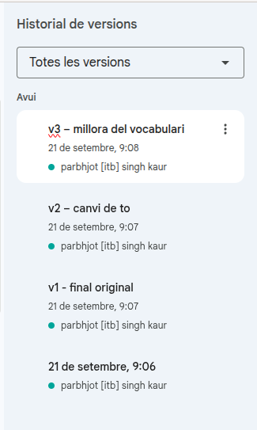
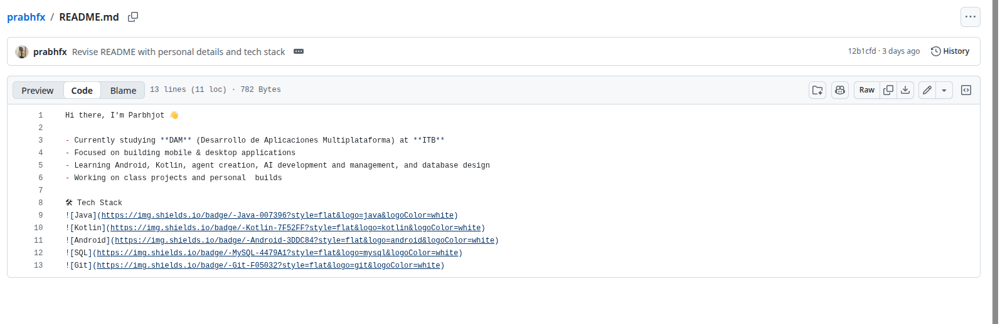
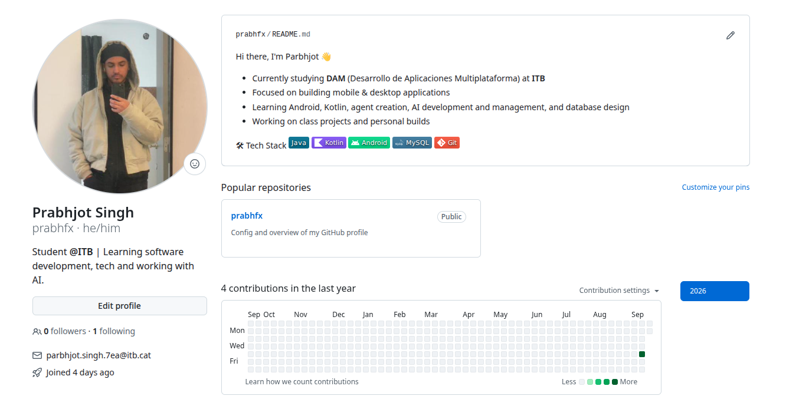
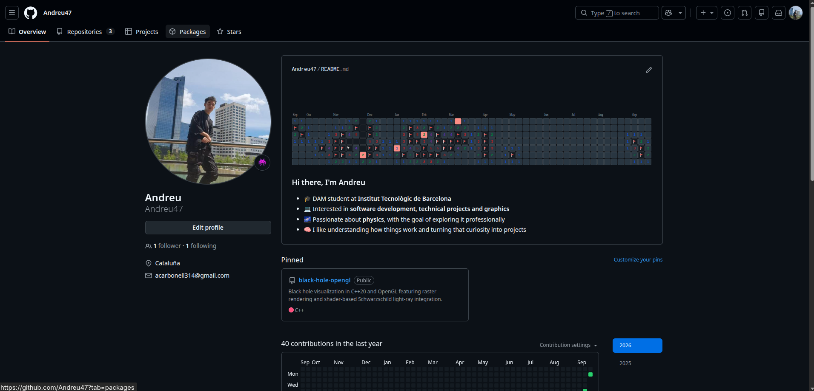

Resum
Dels primers sistemes a Git
Vam estudiar l'origen del control de versions, el pas dels sistemes locals als distribuïts i la seva importància per treballar en equip. També vam començar a preparar un perfil professional a GitHub.
| Any | Sistema | Aportació |
|---|---|---|
| 1960 | IBM IEBUPDTE | Gestió amb targetes perforades. |
| 1972 | SCCS | Primer control automatitzat. |
| 1982 | RCS | Deltes inverses. |
| 1986 | CVS | Treball en un repositori central. |
| 2000 | Subversion | Millora del model centralitzat. |
| 2005 | Git | Control distribuït ràpid i fiable. |
Aprenentatges
Què hem après
- Registrar, comparar i recuperar versions del codi.
- Identificar qui ha fet cada canvi.
- Diferenciar el model centralitzat del distribuït.
- Utilitzar GitHub per col·laborar i crear un portafolis.
- Personalitzar un perfil amb un README en Markdown.
Activitats
Perfil professional a GitHub
| Pregunta o tasca | Resposta |
|---|---|
| Crear el perfil | Crear un compte amb el correu de l'ITB o afegir-lo a un compte existent per accedir a GitHub Education. |
| Personalitzar-lo | Utilitzar un nom i una fotografia adequats i crear un README amb habilitats, interessos i projectes. |
| Fer el lliurament | Compartir l'URL pública del perfil personal. |
Pendent: l'enllaç del perfil no apareix al PDF proporcionat.
Contingut gràfic
Captures de les activitats



